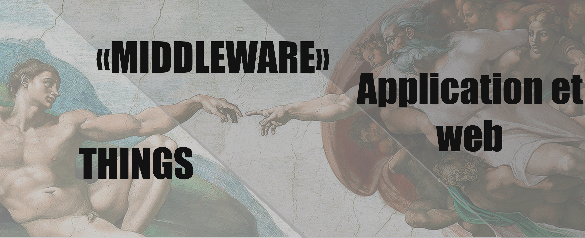
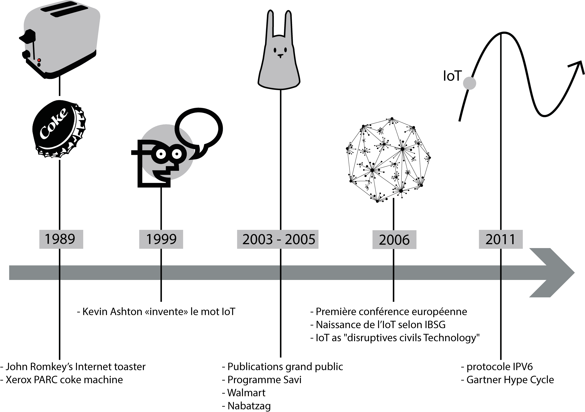
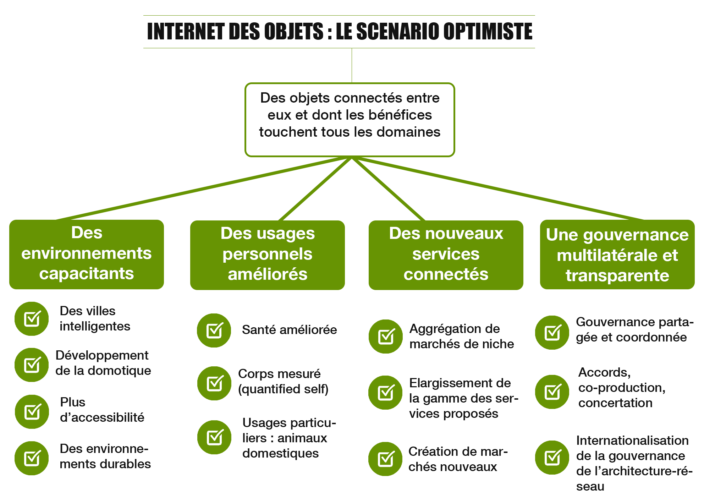
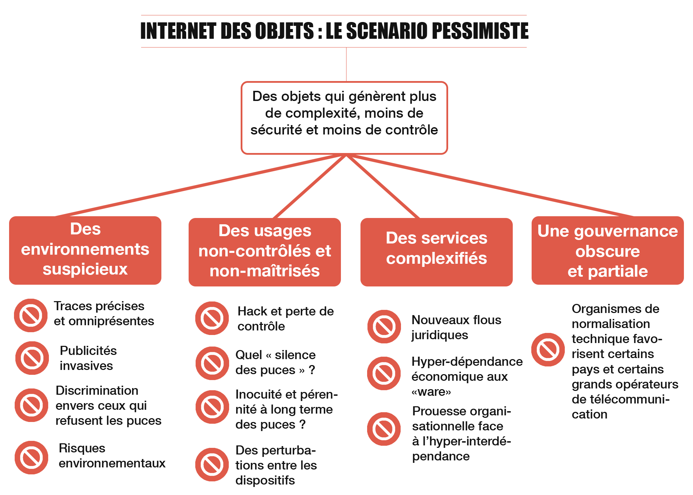
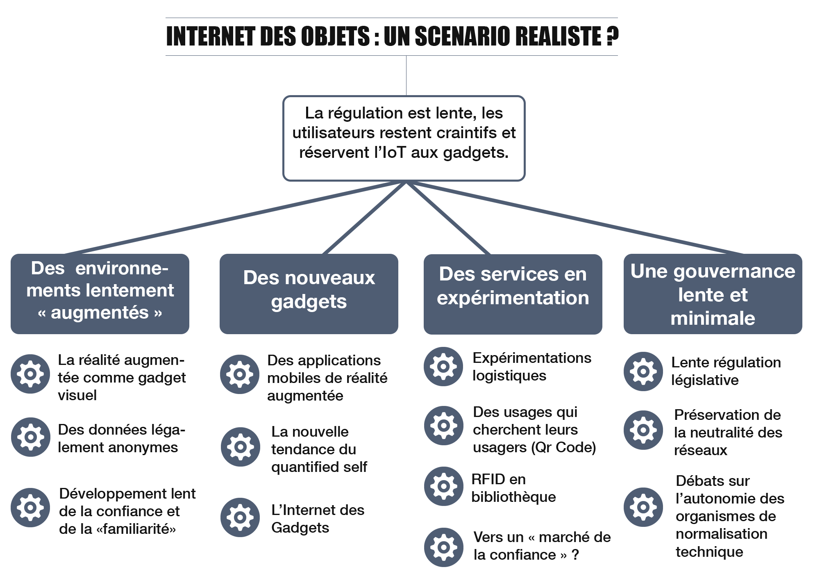
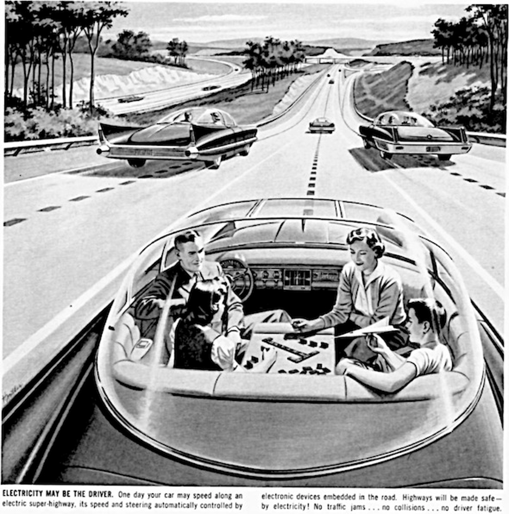
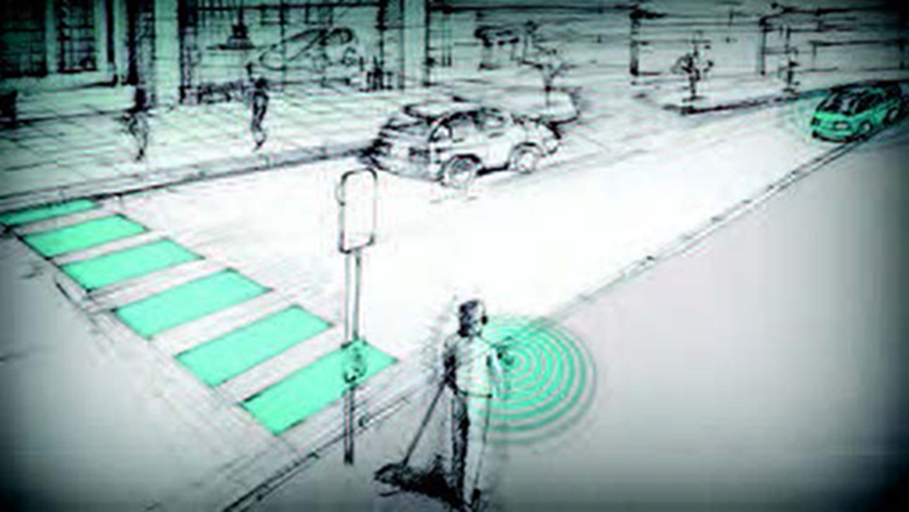

Best with Chrome or Mozilla Firefox
L'Internet des OBJETS
Quels imaginaires ? Quelle place pour l'architecte de l'information ?
- Définition
- Au programme : de la continuité, de la confusion, de l'histoire...
- Comment l'Internet des objets peut-il évoluer ?
- Au programme : de la joie, de la crainte, du réalisme...
- Quelle place pour l'architecte de l'information ?
- Au programme : du nouveau, de l'ancien, du pratique...
| Description | Technologies | |
|---|---|---|
| Web 1.0 puis 1.5 | Interconnexion de pages html. | HTML, HTTP, puis ajout de langages. |
| Web 2.0 | Interconnexion d'utilisateurs. | Mêmes protocoles et standards. Quelques ajouts : blogs, social bookmarking, social tagging, wikis, podcasts, flux rss, CMS, Ajax... |
| Web 3.0 | Interconnexion des données. | Mêmes protocoles et standards. Quelques ajouts : URI, XML, RDF, OWL, SparQL... |
| Web of things | Interconnexion des objets. | Mêmes protocoles et standards. Quelques rares ajouts : REST... |

Source image : Musée du Vatican online.




Le futur de l'Internet des objets ?



Quelle place pour l'Architecte de l'Information ?

Source image : istockphoto.com, libre de droit

Source image : Newsweek Magazine, 17/12/1956

Source image : Louis Coetzee et Guillaume Olivrin, "Inclusion Through the Internet of Things", CSIR Meraka Institute, South Africa
Conclusion
- Des objets interconnectés (Internet) ou seulement connectés (Web) ?
- L'Internet des Objets, c'est du software, du hardware, mais surtout du "middleware".
- Des imaginaires entre expérimentation et répulsion, attirance et réticence.
- Vers un marché de la confiance et un Internet des Gadgets ?
- L'architecte ergonome et administrateur du réel.
- Impress.js
Bibliographie & Webographie
- BENGHOZI, Pierre-Jean, BUREAU, Sylvain et MASSIT-FOLLÉA, Françoise, L’Internet des objets : Quels enjeux pour l’Europe. Nouvelle édition, Paris, Éditions de la Maison des sciences de l’homme, 2009, [en ligne].
- BENHAMOU, Bernard , L’internet des objets : Défis technologiques, économiques et politiques, Esprit, n° 3-4, 2009, p. 137-150, [en ligne].
- KESSOUS, Emmanuel, Quand les objets deviennent communicants La mise en confiance des acteurs humains et la question des traces numériques, Annales des Télécommunications, vol.62, 2007, p. 1192-1206, [en ligne]
- GUILLAUD, Hubert, De l’internet des objets au web des objets, 26/09/2013, [en ligne] .
- FORTUNA Carolina, GROBELNIK, Marko, The Web of Things, SensorLab, 2012, [en ligne].
- GUINARD, Dominique, TRIFA, Vlad, Toward the Web of Things : Web Mashups for spanbedded devices, 2009, [en ligne].
- ASHTON, Kevin, The "Internet of Things" Thing, 2009, [en ligne].
- The ASAWoO Project
Merci de votre écoute !
Cette présentation utilise impress.js
Le code est expliqué dans le fichier source.